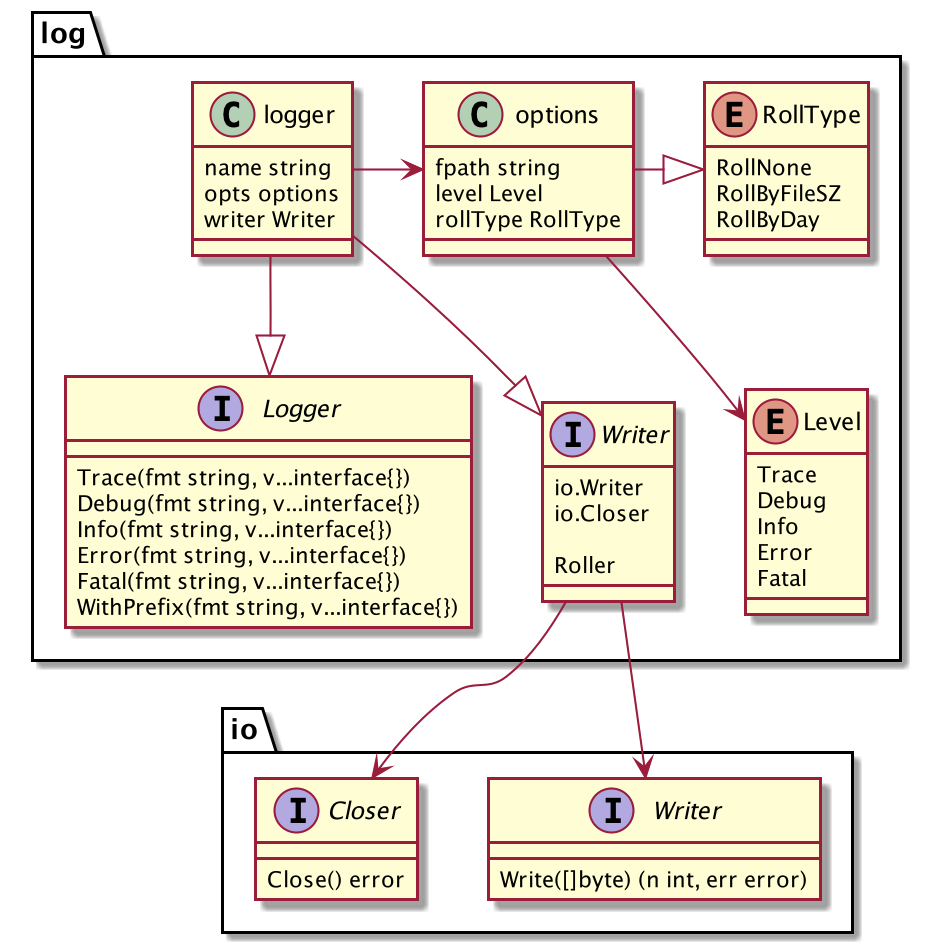

logging
模块设计：log
该模块的详细设计如下，主要包括Logger、Writer两个接口定义，以及日志级别类型Level、日志文件滚动类型RollType。

结合上图，我们一起来看一下log模块的设计，以及这么设计的原因。
- Logger，该接口定义了希望暴露给用户的常见日志输出操作，包含了TRACE、DEBUG、INFO等级别的日志输出的方法，对应的日志级别通过Level常量定义；
- Writer，该接口组合了io.Writer和io.Closer，其中Write方法定义了如何将日志信息写出，根据实现的不同，可以输出到文件，也可以输出到syslog或远程日志系统；
- Level，该接口定义了不同的日志级别，包括TRACE、DEBUG、INFO、ERROR、FATAL几个不同的级别，在初始化一个logger对象的时候允许通过WithLevel选项设置logger的级别，以控制后续Logger方法的输出；
- RollType，以FileWriter为例，经常有需求按照文件大小、日期对日志文件进行滚动，以避免日志文件过大、消息混乱。可以在初始化一个logger对象的时候允许通过选项WithRollType来设置对应Writer的滚动类型。那RollType是不是FileWriter专属的属性呢？不一定，我们也可以用来控制ElasticsearchWriter按日期创建新的索引。
- options/Option，选项是用来控制Logger的行为的，如日志最低输出级别、日志文件滚动类型等等；
我们提供了一个默认的logger实现，它实现了接口Logger、Writer，但是需要在初始化的时候指定Writer类型。结合大家使用日志的习惯，为了初始化的便利性，我们可以将logger的默认writer使用FileWriter，也允许通过选项WithWriter来覆盖。